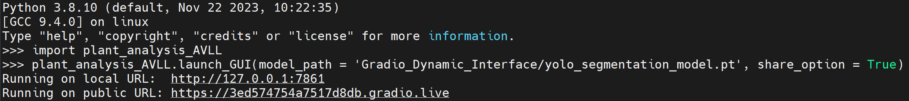

Installation from PyPI
- Python is needed to launch the GUI. Install the library using PyPI with the command
pip install -i https://test.pypi.org/simple/ plant-analysis-AVLL
Download the segmentation model weights from google drive and place the weight file in your work directory
Launch GUI
After successfully installing the library, follow these commands in the Python command line to launch the GUI interface
-
Import the library by
import plant_analysis_AVLL -
Launch the GUI
plant_analysis_AVLL.launch_GUI(model_path = <path to segmentation model weight file>, share_option = <True or False>). Enter the path to the downloaded model weights file in model_path and set share_option to True to get a publicly shareable link to the GUI.
After running the command, GUI will be running in the local. Click or Paste the link generated from the above command in your browser

To access the GUI from the host, use the local link. Follow the public link to access the GUI from outside the host.
Check out usage guide to get started with GUI